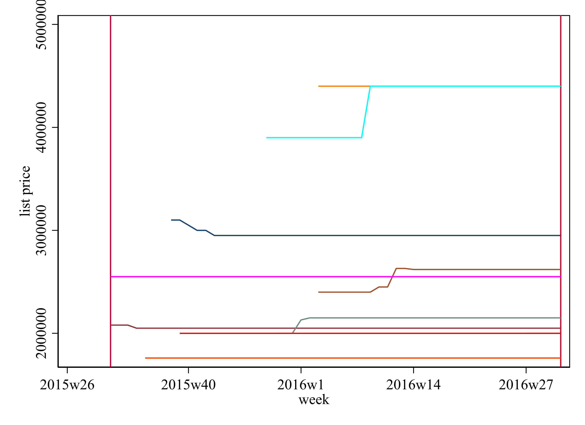

Job market paper with Ruiyu Zhu
Option Loss and Transaction Cascades in the Housing Market
This project studies how the sale of a previously inspected property affects buyers who lose that option. A dynamic sequential-search model links property exit to imperfect recall and signals of tighter market conditions. Empirically, option loss raises affected buyers' purchase probability, especially in tighter markets and for buyers with larger choice sets.
Planned presentation at the Zurich-Oxford Doctoral Symposium.
